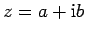

Formal betrachtet wird mit komplexen Zahlen  in der gleichen Weise gerechnet wie mit gewöhnlichen Binomen, nur daß zu berücksichtigen ist. Bei Divisionen komplexer Zahlen durch eine andere komplexe Zahl wird zuerst der Imaginärteil des Nenners beseitigt, indem Zähler und Nenner mit der konjugiert komplexen Zahl des Nenners multipliziert werden. Das ist möglich, weil
| (1.141) |
eine reelle Zahl liefert.
| Beispiel |
|
|